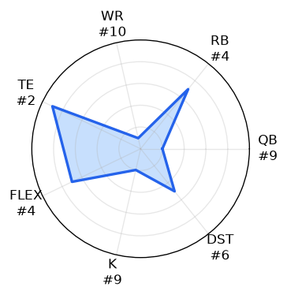
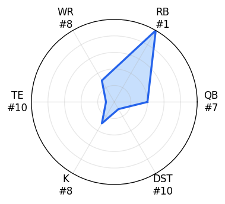
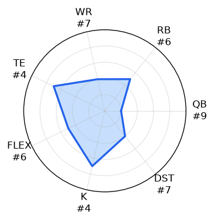
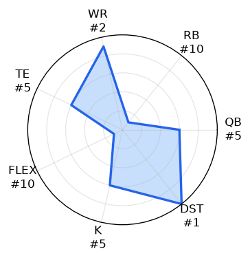
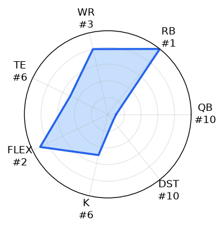
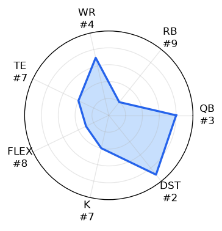
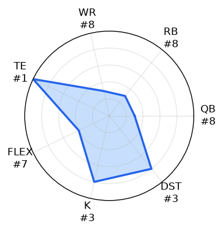
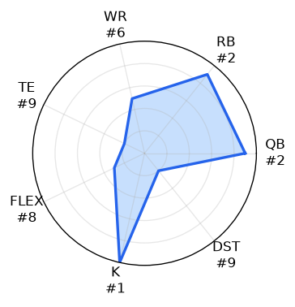
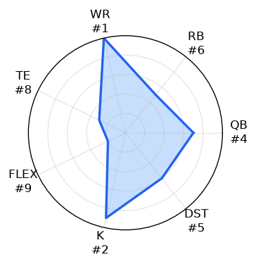
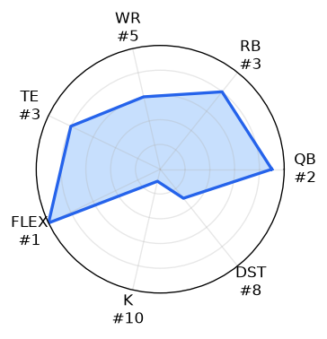

SYPIP Post-Draft Rankings
Cellar Dwellars
You guys tried and in the end that's what really matters right? You showed up, had some laughs with your friends and may or may not have been paying much attention on draft night. That's ok, cause there's alwasy next year.
#10 parkerwilson19

-
Biggest Reach: Matthew Stafford — pick 17, ADP 43.0 (+26.0)
-
Biggest Value: Justin Herbert — pick 54, ADP 15.0 (-39.0)
Thanks for showing up. You did your best (I think?), but it might be best to let the pros take the season from here. Running out the 9th-best QB position group in a SuperFlex league is certainly...a decision. We also managed to pair that 9th-ranked QB group with a 10th-ranked WR corps, woo! Nothing says contender like a WR group led by a guy who's got a glorified RB throwing him the ball. So far, this has been a bit harsh, so here's the silver lining. Trey McBride and Jonathan Taylor are capital-E ELITE. There will be weeks when they'll carry you to victory with a little help from the supporting cast. But there's the catch: that supporting cast is about as reliable as an umbrella made of tissue paper. See you next year 👋
#9 don’t stop billievin

-
Biggest Reach: Mark Andrews — pick 88, ADP 184.0 (+96.0)
-
Biggest Value: Kyler Murray — pick 73, ADP 53.0 (-20.0)
I have good news and bad news. Good news: you did better than parkerwilson19. Bad news: the list ends there. You might be staring up at the rest of the league in the standings this year, but at least you went all in. All in at RB, that is. Who cares about the other positions, am I right? Bijan Robinson and Derrick Henry give you one of the top RB rooms in the league. But that's about all this team's got going for it. Joe Burrow is a great QB1, but Kyler Murray as a weekly starter could get ugly. All hail Kevin O'Connell 🙌. Don't think we didn't see those receivers either. McConkey and Rice aren't a bad combo, but the group lacks a true #1 receiver, with no one ranked in the top 10 in the league. Maybe D.J. Moore can finally be that guy for Josh Allen and the Bills, but it might be time to stop billievin'. Enjoy the wins this year; they might be few and far between.
Playoff Hopefuls
This next group has some promise, but a whole lot of potential for crash out too. If things go right, they might just back themselves into a playoff spot. But if they don't well they'll be right next to the Cellar Dwellars some December.
#8 kcoffield

-
Biggest Reach: Chris Boswell — pick 125, ADP 196.0 (+71.0)
-
Biggest Value: Tony Pollard — pick 96, ADP 85.0 (-11.0)
This team has potential; you just have to look hard for it. Really, really hard. It seems you may have fallen asleep on draft night and forgotten that you needed 2 RBs. You didn't really think that Travis Etienne was gonna get it done, did you? But let's not get ahead of ourselves. James Cook is a bona fide RB1 with true game-breaking potential. Pair that with the JJeff/DeVonta/Williams WR corps, and this team could put up some BIG weeks. Of course, that depends on Baker Mayfield doing his part, which I'm not sure you want to rely on every week. Oh, and let's not forget that kicker. You just couldn't bear the thought of someone else rostering YOUR kicker, huh? This team will be very fun some weeks, but in the end, you'll be watching the playoffs from the couch, just like your kicker.
#7 Chowder

-
Biggest Reach: Sam LaPorta — pick 59, ADP 121.0 (+62.0)
-
Biggest Value: Jordan Mason — pick 119, ADP 97.0 (-22.0)
Be honest, you got halfway through the draft and then had your “oh shit!” moment. RBs exist too. The 10th-ranked RB group limits any potential your 2nd-ranked WR group gives the squad. JSN, AJ Brown, and Jaylen Waddle must be looking around in the huddle like Will Smith in The Fresh Prince. Where are the other good players? Turns out it's just them and the Ravens defense. Sure, Drake Maye and Goff/Darnold give you a solid QB room, and LaPorta was a nice value at 59, but even they can't make up for Jordan Mason as your RB2. Take a seat on the couch next to kcoffield, and better luck next year.
Championship Hopefuls
We now find ourselves with some expectations. These teams did enough to position themselves for a shot at a true contention, albeit one that will likely fall short. Their floor is higher than the teams below them, and they have more stability in their rosters, but they'll need some truly better than expected developments to find themselves fighting for the trophy.
#6 The Spotted Lantern Flies

Roster analysis
-
Biggest Reach: Chris Olave — pick 32, ADP 50.0 (+18.0)
-
Biggest Value: Marvin Harrison Jr. — pick 109, ADP 91.0 (-18.0)
Congratulations, you made it. The contenders' room. You got here by the skin of your teeth, but you are officially a Projected Top 6 Team. Soak it in, 'cause it's about as much as you're gonna taste of the elite tier of SYPIP. Let's start with the good, since we've moved on from the cellar dwellers now. This team is led by RB and WR groups that figure to lead the league. Gibbs/Barkley is the best duo in the league, Olave/Nabers/Pickens is a top-flight group, and Javonte Williams is an elite flex option. That's how you build a winning core, bravo. Unfortunately, you forgot about the Super in SuperFlex. Jordan Love and Tyler Shough aren't gonna cut it, landing your QB group dead last in the league rankings. Tucker Kraft is also a good option at TE but carries a lot of risk coming off an ACL injury. This team has a great core that can take it far, but they'll be carrying the freeloading QBs and Kraft's reconstructed ACL on their backs for the whole season.
#5 lamps❤️

-
Biggest Reach: Kyle Pitts — pick 61, ADP 140.0 (+79.0)
-
Biggest Value: Brock Purdy — pick 60, ADP 25.0 (-35.0)
This team is solid; good job. It's not elite, but you've set yourself up to contend with a little bit of luck and some savvy transactions throughout the season. The headline here is the QBs. Lamar Jackson and Brock Purdy are a 1-2 punch that only two other teams in the league can compete with. When you're starting 2 QBs every week, that can be hard to beat. The WRs aren't too shabby themselves. Amon-Ra and Tet McMillan give you 2 of the top-11 WRs across the league. Of course, the team isn't perfect, and the RB room is where cracks start to show. Jacobs (jail), Walker (injury), and Williams (plays for the Cowboys) all present some real bust potential. If 2—or even all 3—stay on the field and out of prison, this team might be able to make some noise in December.
#4 Stinky Nala

-
Biggest Reach: Denver Broncos — pick 115, ADP 148.0 (+33.0)
-
Biggest Value: Dak Prescott — pick 66, ADP 17.0 (-49.0)
Welcome back to our defending champion 🏆 Stinky Nala {insert round of applause}. It looks like last year may not have been a fluke, as you've put together another solid team for your title defense, bravo. This team is defined by its TEs. Brock Bowers is one of 2 truly game-changing tight ends in the NFL right now, and George Kittle is as good a backup as there is. The only caveat is that both have some pretty sketchy injury histories, and we've already seen that cause issues for Bowers this year. Dak and Trevor Lawrence make up a solid QB room, and it could be great if Trevor Lawrence has the big breakout season everyone expects to see. But without it, you'll find yourself struggling to compete because those 8th-ranked WR and RB groups won't do much to assist Bowers and Co. Sure, McCaffrey and Egbuka are still viable RB1/WR1 options, albeit barely in a 10-team league, but the depth they're paired with simply won't get it done. Each slot in these rooms is at the bottom of the league, so don't expect too much magic from this group. If things go well for Nala's QBs and TEs, this could be a scary team; unfortunately, that's a big if.
Contenders
And with that we have entered the true contenders of the league. Everyone else looked at these teams after the draft and thought "how the fuck did they get away with that". It was a true broad daylight robbery of the rest of the league and they'll be putting on some true heavyweight fight throughout the season, and into deep playoff runs.
#3 Panini Sprint Project

-
Biggest Reach: Cam Little — pick 104, ADP 167.0 (+63.0)
-
Biggest Value: Kenneth Gainwell — pick 124, ADP 99.0 (-25.0)
First up, we have Panini Sprint Project. This GM understood the assignment and went all in on QB, coming away with the #1 QB room in the league. Josh Allen is a matchup nightmare and is good for a few weeks of absolutely carrying your team to victory. And on this roster, that strategy works because the RB and WR groups are just good enough to provide Allen the support he needs to win (must be nice for a change). Omarion Hampton is the RB5 across the league, and Bucky Irving and Cam Skattebo provide solid RB2 backup and should be good for a few breakout weeks. CeeDee Lamb should be able to carry the WR corps most weeks, and when Tee Higgins pops off, this team will be hard to beat. Congrats, you've set yourself up for a deep playoff run; try not to blow it again.
#2 spiro327

-
Biggest Reach: Dalton Kincaid — pick 71, ADP 156.0 (+85.0)
-
Biggest Value: Bo Nix — pick 70, ADP 40.0 (-30.0)
Hey there, spiro327, what's it like at the top? You may be coming off a league-worst finish, but you got in the lab and came out in 2026 to put the league on notice with the 2nd-ranked team in the league. What sets this team apart? How about those league-leading WRs? Ja'Marr Chase/Drake London is a terrifying combo for anyone going against this team. It's a duo that simply can't be beaten across the league. A top-quartile QB room and league-average RBs are what allow the WRs to really shine and make a difference week to week. You've got 3 solid QBs in Mahomes, Williams, and Nix, which will help to soothe any injuries or lack of production from someone. The RB group as a whole may also be average, but Ashton Jeanty is not. The league-wide RB3, he threatens to break any matchup wide open, especially when paired with those receivers. This team will be a nightmare all season long.
#1 Beets by Dwight

-
Biggest Reach: Jordan Addison — pick 103, ADP 138.0 (+35.0)
-
Biggest Value: Jaxson Dart — pick 63, ADP 26.0 (-37.0)
And last, but most certainly not least, that leaves us with our preseason champion: Beat by Dwight. This team can hurt you up and down the roster. They might not have the best positional group at any spot, but all but one are in the top 3, and the odd group out is the 5th-ranked WR group. Not too shabby. The team is led by its stellar QBs, Jaxson Dart and Jayden Daniels. But they're backed up quite nicely by Puka Nacua, De'Von Achane, Breece Hall, and Tyler Warren, all of whom have the potential to end up in the top 5 at their positions at the end of the season. And just when you thought this team was already loaded enough, you see Jeremiyah Love hiding out in the shadows. He may not be listed as the Cardinals' RB1 for Week 1, but don't think that'll keep the 3rd overall pick in this year's draft down for long. If Love develops into the player many believe he can be, then this team gets a whole lot scarier than it already was. Good luck to the rest of the league trying to stop that runaway train.
Projected Standings
Based on 100,000 schedule simulations using bye-adjusted KTC starting-lineup value; K and D/ST are excluded.
| Rank | Team | Projected Wins | Playoff Probability |
|---|---|---|---|
| 1 | Beets by Dwight | 17.7 | 92.8% |
| 2 | The Spotted Lantern Flies | 15.9 | 81.3% |
| 3 | spiro327 | 14.7 | 70.4% |
| 4 | Panini Sprint Project | 14.3 | 65.6% |
| 5 | lamps❤️ | 13.5 | 55.5% |
| 6 | parkerwilson19 | 13.2 | 51.9% |
| 7 | don’t stop billievin | 13.1 | 51.5% |
| 8 | kcoffield | 12.8 | 47.3% |
| 9 | Stinky Nala | 12.6 | 44.8% |
| 10 | Chowder | 12.2 | 38.8% |